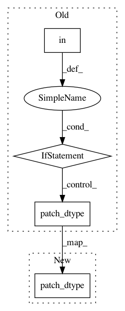

8569f8c1fae9b645a5afb14d876cf7855e1e7d02,server/bert_serving/server/graph.py,,convert_variables_to_constants,#,154
Before Change
if "dtype" in input_node.attr:
patch_dtype(input_node, "dtype", output_node)
if "T" in input_node.attr:
patch_dtype(input_node, "T", output_node)
// fix embedding lookup
if input_node.op in {"GatherV2", "GatherNd"}:
patch_dtype(input_node, "Tparams", output_node)
// if input_node.op in {"Identity", "Reshape", "Shape", "OneHot", "MatMul"}:
After Change
output_node.CopyFrom(input_node)
patch_dtype(input_node, "dtype", output_node)
patch_dtype(input_node, "T", output_node)
patch_dtype(input_node, "DstT", output_node)
patch_dtype(input_node, "SrcT", output_node)
// fix embedding lookup
In pattern: SUPERPATTERN
Frequency: 3
Non-data size: 4
Instances
Project Name: hanxiao/bert-as-service
Commit Name: 8569f8c1fae9b645a5afb14d876cf7855e1e7d02
Time: 2019-01-18
Author: hanhxiao@tencent.com
File Name: server/bert_serving/server/graph.py
Class Name:
Method Name: convert_variables_to_constants
Project Name: hanxiao/bert-as-service
Commit Name: a774cc0a783db9783b1e9b9a81557701a088dd07
Time: 2019-01-18
Author: hanhxiao@tencent.com
File Name: server/bert_serving/server/graph.py
Class Name:
Method Name: convert_variables_to_constants